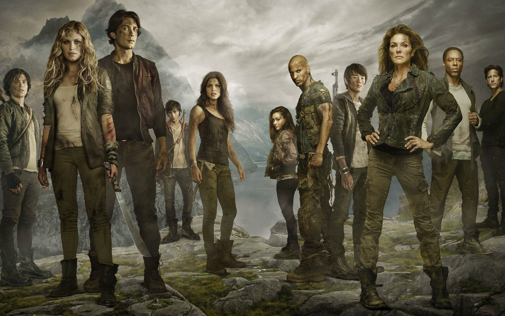
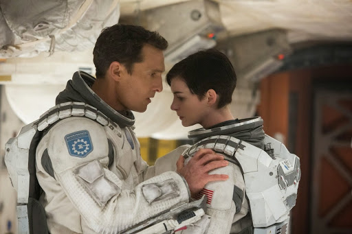
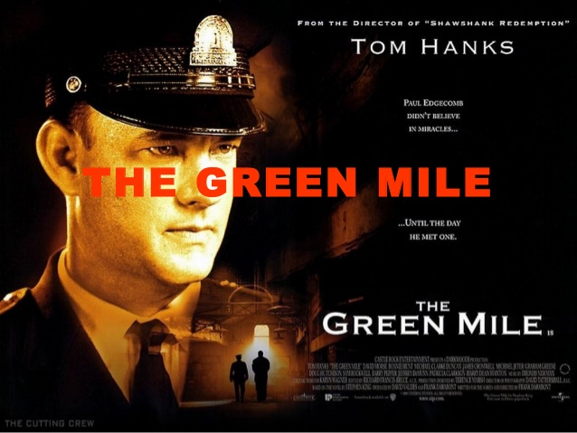
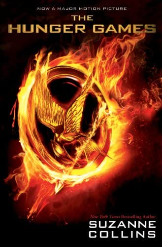

Diziler
-
The 100

97 yıl sonra yeryüzünde yaşayan insanların ölümüyle sonuçlanan nükleer bir savaş gerçekleşmiş ve dünyanın yüzeyi yaşanılamayacak seviyede radyasyonla kaplanmıştır. Bilinen tek hayatta kalanlar gezegenin yörüngesinde bulunan 12 farklı ülkeye ait istasyonlarda yaşayanlardır
-
Black Mirror

Modern toplumun ve bu toplum içindeki bireyin problemlerini, yeni teknolojilerin getirdiklerini ve mevcut dünya düzenindeki siyaset, medya, sanat ilişkilerini yer yer hiciv ile yer yer de bilimkurgu ögelerine başvurarak yorumlamaktadır.
-
Snowpiercer

Her şeyin donduğu dünya yüzeyinde 2031 yılında yalnızca bin kadar insan yaşamaktadır. Bu insanlar kar küreyici adlı devridaim makinesi ile çalışan bir trende birlikte yaşamaktadırlar. Trendeki şartlar burada yaşamak zorunda kalan insanlar arasında ağır bir sınıf sisteminin uygulanmasına yol açmıştır.
Filmler
-
Interstellar

Yakın bir gelecekte, tahıl ürünlerinin ölmesine neden olan bir küf yüzünden medeniyet gerileyerek tarım toplumu seviyesine düşmüştür. Dul bir mühendis ve eski bir NASA pilotu olan Joseph Cooper ailesi ile birlikte bir tarla işletmektedir. O artık bir çiftçidir. 15 yaşında bir oğlu (Tom Cooper) ve 10 yaşında bir kızı (Murphy "Murph" Cooper) vardır. Bir toz fırtınasından sonra, Murphy'nin yatak odasının zemininde açıklanamayacak şekilde garip toz desenleri belirir; anomaliyi bir hayalete bağlar.
-
The Fast and the Furious

Dominic Toretto, Los Angeles sokaklarına karanlık çöktükten sonra sınır tanımadan otomobil yarışları yapan bir grubun lideridir. Polis, sokaklarda dehşet saçan Toretto’nun aynı zamanda hırsızlık yaptığından; yüksek değerdeki elektronik aletleri çaldığından da şüphe etmektedir. Polise göre Toretto’yu yakalamanın en iyi yolu; aşırı hız düşkünü çetenin içine bir dedektif yerleştirmek ve onları suçüstü yakalamaktır.
-
The Green Mile

Oldukça iri yarı biri adam olan John Coffey, iki küçük kızı öldürmek suçundan idama mahkûm olmuştur. Ürkütücü görünümünün aksine oldukça ince ve karmaşık bir iç dünyası olan Coffey, bazı doğaüstü güçlere sahiptir. Hapishanenin infaz odası baş gardiyanı Paul Edgecomb'un ona gerçekten suçlu olup olmadığını sorması ile birlikte aralarında bir diyalog başlar. Hasta olan Edgecomb'un Coffey'in güçleri sayesinde iyileşmesiyle olaylar gelişmeye başlar. Coffey, doğaüstü gücü sayesinde kendi içine çektiği hastalıkları ağzından serbest bırakarak hayatına devam edebilmektedir.
Kitaplar
-
Fahrenheit 451

Guy Montag işini seven bir itfaiyecidir. Televizyonun ve teknolojinin hüküm sürdüğü karanlık bir dünyada okuma eylemi yok olmak üzeredir, zira itfaiyeciler yangın söndürmek yerine ortalığı ateşe vermektedir. Montag'ın işi ise yasadışı üretimlerin en tehlikelisi olan kitapları yakmaktır.
-
The Hunger Games

Geçmişte Capitol'a karşı gerçekleştirilmiş bir isyanın cezası olarak her yıl her mıntıkadan 12-18 yaş aralığından bir kız ve bir erkek, kura yöntemiyle seçilerek Açlık Oyunları'na dâhil edilir. Açlık Oyunları, "haraç" olarak bilinen bu yarışmacıların sadece bir tanesi hayatta kalana kadar açık bir arenada ölümüne savaşması gereken bir yarışmadır ve televizyonda yayımlanmaktadır.
-
Olasılıksız

Bir sabah, yıllardır görmediğiniz bir arkadaşınızı düşünerek uyandınız. Bir saat sonra, onunla sokakta karşılaştınız. Sizce bu sadece bir tesadüf mü, yoksa çok daha farklı bir anlamı olabilir mi? Siz hiç Loto’da büyük ikramiyeyi kazanmadınız. Ama birileri kazanıyor. Hem de sürekli! Onlar sizden daha mı şanslılar?